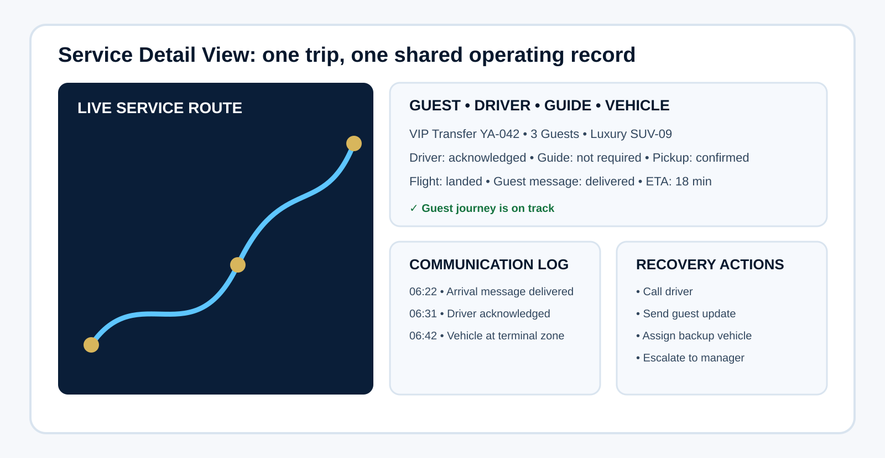

Estimated article reading time
A fleet dashboard should not be a collection of charts. It should be a decision room.

In tourist transportation, a vehicle is never only a vehicle.
Related reading: To connect fleet control with the wider guest journey, read Destination Experience Journey Map. For assigning drivers, guides and backup people before service starts, read The Assignment Engine.
It is an airport welcome before a guest has slept. It is the first impression of a destination after a long flight. It is the moving link between a hotel, an attraction, a desert camp, a cruise terminal, a restaurant, a conference venue and the airport departure gate.
When that vehicle is late, unclean, incorrectly allocated, poorly maintained or disconnected from the operations team, the guest does not see an internal transport issue. The guest sees a company that is not ready.
That is why fleet management cannot be treated as a maintenance spreadsheet at the end of the week. It must be managed as a live operational system.
A modern fleet control tower gives an operations manager one clear answer to one important question:
“What can affect today’s guests, vehicles, drivers, revenue and service quality—and who is taking action now?”
The purpose is not to place every number, route, driver score and maintenance record onto one screen. The purpose is to help a manager see the operating picture in seconds, identify exceptions before they become guest complaints, and coordinate the right people without panic.
For a DMC, tour operator, transport provider or destination operations team, the fleet control tower becomes the bridge between reservations, dispatch, drivers, guides, guest communication, suppliers, maintenance and management.
It is the operating heart of transportation quality.
The difference between fleet tracking and a fleet control tower
Many companies already have GPS tracking. They can see dots moving on a map. They know where vehicles are. They may even receive alerts for speeding, idling or harsh braking.
That is useful—but it is not a control tower.
A GPS map tells you where a vehicle is.
A fleet control tower tells you:
- Which guest transfer is at risk.
- Which vehicle is ready, unavailable or due for maintenance.
- Which driver has not acknowledged their assignment.
- Which airport arrival has changed because of a flight delay.
- Which family requires a child seat.
- Which VIP guest needs a premium vehicle.
- Which guide is waiting for transport confirmation.
- Which supplier vehicle has not arrived at the hotel.
- Which breakdown requires immediate replacement.
- Which problem has an owner, a deadline and a recovery action.
A control tower is not built around vehicles alone. It is built around operational decisions and guest impact.
The manager should not need to open five systems, call three people and search through twenty WhatsApp messages to understand the day. The dashboard must bring the essential information together, create priorities and show the next action.
The first rule: one screen, one operating picture
The most common dashboard mistake is trying to show everything.
A manager does not need twenty charts at 7:00 AM. They need clarity.
The home screen should answer five questions immediately:
| Manager question | What the control tower should show |
|---|---|
| Are we operationally ready? | Available vehicles, active vehicles, vehicles in maintenance, driver availability and supplier capacity |
| What is happening right now? | Live transfers, active tours, airport arrivals, delayed pickups and vehicles running behind schedule |
| What is at risk? | Late drivers, unacknowledged jobs, delayed flights, vehicle defects, guest no-shows and unresolved incidents |
| What needs action first? | A ranked exception queue with owner, severity, time remaining and required response |
| Did we deliver quality today? | On-time pickup rate, guest contact success, trip completion, vehicle condition, complaints and recovery performance |
The best control tower feels calm, even when the operation is not.
It should not create more noise. It should remove noise.
A good rule is this:
If a dashboard item does not help someone make a decision, take an action or prevent a risk, it does not deserve space on the main screen.
The dashboard layout: what belongs on the main screen
A strong fleet control tower can be divided into six working zones.
1. The executive status strip
At the top of the dashboard, the manager should see a short, high-level view of the operation.
For example:
| Fleet status | Today’s view |
|---|---|
| Total fleet capacity | 48 vehicles |
| Good to Go | 39 |
| In active service | 26 |
| Returning or repositioning | 6 |
| In maintenance | 3 |
| Standby or backup | 4 |
| Supplier vehicles confirmed | 11 of 12 |
| Trips planned today | 86 |
| Trips at risk | 5 |
| Critical incidents | 1 |
This top strip gives the manager instant awareness.
But the key is that every number must be clickable.
When the manager clicks “Trips at risk,” the system should open the exact list of trips, show why they are at risk, who owns the action and how much time remains before the guest is affected.
A number without action is only decoration.
2. The live operations map
The map should not dominate the screen simply because it looks impressive.
Maps are useful, but only when they support decisions.
The live map should highlight:
- Active vehicles in service.
- Vehicles approaching a pickup location.
- Vehicles waiting at a hotel, airport or attraction.
- Vehicles delayed beyond an agreed threshold.
- Vehicles outside their planned route or zone.
- Vehicles with a technical alert.
- Available backup vehicles.
- Airport transfer routes affected by flight changes.
- Major event zones, road closures or restricted access areas.
For a destination such as Abu Dhabi, the map can also show operational zones such as Abu Dhabi City, Corniche, Yas Island, Saadiyat Island, Airport Area, Al Ain, Al Dhafra, Liwa and Ruwais.
The manager should be able to filter the map by:
- Vehicle type.
- Tour or transfer type.
- Driver.
- Guide.
- Supplier.
- Zone.
- Status.
- VIP or priority service.
- Airport arrival.
- Incident category.
The map is not there to monitor drivers like surveillance. It is there to protect timing, safety, guest experience and operational recovery.
Visual 1: Recommended dashboard image
Dashboard concept: A live UAE operations map showing vehicles by status, airport arrivals, hotel pickup zones, traffic alerts, delayed transfers, standby vehicles and event congestion areas.
Suggested caption: Live Operations Map: A control tower should show where the fleet is, but more importantly, which guest journeys are becoming operationally at risk.
3. The exception queue: the most important part of the screen
In my experience, the most valuable part of any transport control tower is not the map. It is the exception queue.
A normal operation should not require a manager’s attention.
An exception should.
The exception queue is where the system converts raw operational data into practical management action.
For every exception, the dashboard should show:
| Field | Example |
|---|---|
| Priority | Critical / High / Medium / Low |
| Service | Airport Transfer AUH-108 |
| Guest impact | Family of four arriving in 42 minutes |
| Problem | Assigned driver has not acknowledged |
| Vehicle | SUV-12 |
| Owner | Dispatch Supervisor |
| Required action | Call driver; assign backup if no response in 5 minutes |
| Recovery deadline | 06:55 |
| Status | Open / In progress / Resolved |
| Communication note | Guest informed / hotel informed / guide informed |
The system should rank incidents according to guest impact, not only technical importance.
For example, a minor maintenance warning on an idle vehicle may be important, but it is not more urgent than a family arriving at the airport with no confirmed driver.
A good priority model can be:
| Severity | Meaning | Example |
|---|---|---|
| Critical | Guest experience or safety will be affected immediately | Vehicle breakdown with guests onboard |
| High | Service will fail unless action is taken soon | Driver not confirmed for airport arrival in 30 minutes |
| Medium | Risk exists but there is still time to recover | Vehicle AC performance issue for an afternoon service |
| Low | Improvement or follow-up issue | Vehicle cleanliness score below target |
This is the difference between reacting to alarms and managing operations.
4. Fleet readiness and technical health
A tourism fleet is expected to deliver comfort, safety and consistency.
A vehicle may be mechanically able to move but still not be ready for guests.
A fleet readiness section should clearly show whether every vehicle is truly “Good to Go.”
A strong readiness check combines operational and technical data.
| Fleet readiness category | Examples of checks |
|---|---|
| Vehicle condition | Tyres, lights, brakes, warning lights, mirrors, fuel level |
| Comfort readiness | AC performance, seat condition, cleanliness, smell, water, charging ports |
| Safety readiness | Seat belts, emergency kit, fire extinguisher, first-aid kit, child-seat availability |
| Documentation | Registration, insurance, permits, inspection validity |
| Tourism readiness | Luggage capacity, route requirement, guest category, accessibility needs |
| Dispatch readiness | Driver assigned, trip acknowledged, guide contact confirmed, guest details received |
The dashboard should use a clear readiness status:
- Good to Go — fully ready and available.
- Ready with Note — can operate but needs attention after the current service.
- Restricted — can operate only under specific conditions.
- Maintenance Hold — cannot be assigned.
- Out of Service — unavailable due to breakdown, accident, repair or documentation issue.
This prevents one of the most expensive fleet mistakes: assigning a vehicle because it appears available, while ignoring that it is not suitable for the guest journey.
A luxury airport transfer cannot be assigned to a vehicle with weak AC, insufficient luggage space or a worn interior simply because the system shows the vehicle as “free.”
Availability and suitability are not the same thing.
Visual 2: Recommended dashboard image
Dashboard concept: A fleet-readiness board with each vehicle represented by a card showing vehicle type, current location, fuel level, AC status, maintenance due date, cleanliness score, assigned driver and operational status.
Suggested caption: Fleet Readiness Board: “Available” is not enough. The real question is whether each vehicle is safe, comfortable, compliant and suitable for the guest service ahead.

The guest experience layer: the dashboard must see people, not only vehicles
Transport teams often make one major mistake: they manage movement but forget the guest.
A guest does not care that the dispatcher has reassigned Vehicle 24 to Vehicle 37. The guest cares about whether someone is waiting, whether the vehicle is clean, whether the driver knows where to go and whether the pickup is clear.
The control tower must therefore show guest-impact details alongside fleet information.
For high-priority services, the operations manager should be able to see:
- Guest name or booking reference.
- Hotel, terminal or attraction location.
- Number of adults, children and infants.
- Language requirement.
- Luggage quantity.
- Child-seat requirement.
- Wheelchair or mobility requirement.
- VIP or special handling notes.
- Guide assignment.
- Flight number and arrival status.
- Guest contact confirmation.
- Pickup message delivery status.
- Transfer or tour itinerary.
- Recovery notes if a problem occurs.
The dashboard should not expose unnecessary personal data to every user. It should use role-based access. A driver needs the correct trip details. A fleet technician does not need the guest’s full travel information. A senior manager may see the service impact but not every personal detail.
This is where operational design meets data protection.
The best system gives each person enough information to do their job properly—without creating unnecessary risk.
Communication architecture: how the control tower connects the teams
A fleet control tower is not only software. It is a communication discipline.
In a good transport operation, information moves through a clear chain:
Reservations → Dispatch → Driver → Guide → Guest → Operations Manager → Maintenance or Supplier Team
The problem begins when teams use different versions of the truth.
Reservations may update the pickup time in one system. Dispatch may continue using an old Excel sheet. The driver may only see an outdated WhatsApp message. The guide may arrive at the hotel with a different guest list. The guest may receive a pickup message that no longer matches the operation.
This is how small errors become major failures.
The control tower should create a single operational record for every service.
Each trip should have:
- A unique Trip ID.
- Booking reference.
- Guest service details.
- Assigned vehicle.
- Assigned driver.
- Assigned guide, where relevant.
- Pickup and drop-off points.
- Planned schedule.
- Live status.
- Communication log.
- Exception record.
- Incident owner.
- Completion confirmation.
A simple trip-status model could look like this:
| Status | Meaning |
|---|---|
| Confirmed | Booking is operationally approved |
| Allocated | Vehicle and driver are assigned |
| Acknowledged | Driver has confirmed the assignment |
| En Route | Driver is travelling toward pickup |
| Arrived | Driver has reached pickup point |
| Guest Onboard | Guest has entered the vehicle |
| In Service | Transfer or tour transport is active |
| Completed | Guest safely delivered or service completed |
| Exception Open | A problem requires action |
| Closed with Recovery | The issue was resolved and recorded |
The most important step is acknowledgment.
A dispatcher sending an assignment is not confirmation.
The system should record whether the driver has opened, read and acknowledged the trip. If acknowledgment does not happen within an agreed time, the control tower should automatically create an exception.
This is known as closed-loop communication:
Send the instruction. Confirm receipt. Confirm understanding. Record completion.
It sounds simple. In live operations, it prevents a huge number of missed pickups.
The driver and guide coordination panel
Tourist transportation succeeds when drivers and guides operate as one team.
The driver manages safe and smooth movement. The guide manages guests, timing, experience and destination interpretation. The dispatcher manages coordination and recovery.
When these roles operate separately, guests feel the gaps.
A driver-guide coordination panel should show:
- Assigned driver and guide.
- Contact status.
- Pickup briefing completed.
- Guest list confirmed.
- Tour route confirmed.
- Attraction access or ticket status.
- Parking instructions.
- First and final stop.
- Expected waiting time.
- Guest count at every key movement stage.
- Return transfer requirement.
- Emergency or escalation contact.
For a city tour, the guide should not need to call the dispatcher to ask where the driver is. The system should show the vehicle’s ETA and status.
For a desert tour, the driver should know whether the guide has completed the guest safety briefing, whether child seats are required and whether the return journey has a fixed deadline.
For a large MICE movement, the guide or group leader should be able to confirm boarding count through a simple mobile action.
The best communication is not more calls. It is better shared visibility.
Visual 3: Recommended dashboard image
Dashboard concept: A service-detail screen for one active tour showing the guest group, driver, guide, vehicle, pickup timeline, live location, attraction schedule, communication log and emergency action buttons.
Suggested caption: Service Detail View: The control tower should allow an operations manager to open one trip and understand the full guest, vehicle, driver and guide situation in seconds.

Fleet KPIs that matter in tourism operations
A fleet dashboard should not use generic KPIs only because they are easy to measure.
Tourism operations need metrics that connect fleet performance to guest experience.
Operational reliability KPIs
| KPI | Why it matters |
|---|---|
| On-time pickup rate | Measures whether the guest experience begins as promised |
| Driver acknowledgement rate | Shows whether assignments are being confirmed properly |
| Trip completion rate | Confirms that scheduled services are delivered |
| Vehicle availability rate | Shows how much of the fleet is truly ready for service |
| Backup vehicle response time | Measures recovery strength during breakdowns or disruptions |
| Average exception resolution time | Shows how quickly the team fixes live operational problems |
Guest experience KPIs
| KPI | Why it matters |
|---|---|
| Pickup communication success rate | Confirms that guests received clear instructions |
| Vehicle cleanliness score | Measures the visible quality of the fleet |
| Guest transport satisfaction score | Connects fleet performance directly to customer feedback |
| Complaint rate per 100 services | Identifies recurring quality problems |
| Service-recovery satisfaction score | Measures whether the team handled issues professionally |
Fleet health and cost KPIs
| KPI | Why it matters |
|---|---|
| Preventive maintenance compliance | Reduces breakdown risk |
| Unplanned downtime | Shows the impact of unexpected technical failures |
| Fuel use per trip or kilometre | Supports cost control and route efficiency |
| Idle time | Reveals avoidable fuel waste and poor scheduling |
| Fleet utilization | Shows whether the fleet is underused or overloaded |
| Cost per completed guest service | Connects transport spending to actual delivery |
The most mature fleet teams do not use KPIs to blame drivers or dispatchers.
They use KPIs to identify patterns, improve systems and prevent repeated failure.
A realistic morning scenario: how a control tower changes the response
Imagine it is 06:45.
The operation includes airport arrivals, hotel pickups, a private Abu Dhabi city tour, two shared desert-tour transfers and a VIP transfer to Yas Island.
Without a control tower, the dispatcher receives calls, reads messages, checks a flight screen, opens a spreadsheet, calls suppliers and tries to remember which vehicle is available.
With a control tower, the manager sees three priority alerts:
- A flight has landed 35 minutes early.
- The assigned driver has not acknowledged the airport transfer.
- A vehicle assigned to a family transfer has a technical note: AC performance is below required comfort level.
The system immediately suggests actions:
- Reassign the airport transfer to the nearest available SUV.
- Notify the guest through the approved arrival-message template.
- Inform the original driver and log the failed acknowledgment.
- Reallocate the family transfer to a fully ready vehicle.
- Mark the original vehicle as “Restricted” until technical inspection is completed.
- Notify the dispatcher, driver and guide through the same operational record.
The manager does not need to invent the response under pressure.
The system supports the response because the process was designed before the problem happened.
That is the real value of a control tower.
It does not eliminate disruption.
It makes disruption manageable.
The technical foundation: what data the system needs
A fleet control tower does not need to begin with expensive artificial intelligence or complex enterprise software.
It begins with clean operational data.
At minimum, the system should connect five data areas:
| Data source | Information required |
|---|---|
| Reservations system | Booking reference, guest details, dates, service type, pickup point, special requirements |
| Dispatch system | Vehicle allocation, driver assignment, guide assignment, planned route and timing |
| GPS or telematics platform | Live location, speed, route status, driving time, vehicle alerts |
| Fleet maintenance system | Vehicle condition, service dates, defects, documentation, downtime |
| Communication layer | Driver acknowledgement, guest pickup messages, escalation records, shift handover notes |
The system should use common identifiers across all data sources.
For example:
- Vehicle ID
- Driver ID
- Guide ID
- Trip ID
- Booking ID
- Supplier ID
- Incident ID
Without common IDs, data cannot connect properly.
A manager may see a vehicle in the GPS system, a driver in a WhatsApp group and a booking in a reservation platform—but the system cannot understand that they all belong to the same guest journey.
This is why data structure is not a technical detail. It is an operational quality issue.
What not to build
A fleet control tower can fail when it becomes too complicated.
Avoid these common mistakes:
A dashboard that only looks beautiful
A dark screen with maps, graphs and glowing indicators may look impressive in a presentation. But if the dispatcher cannot assign a replacement vehicle in two clicks, it is not useful.
A dashboard with no owner for each issue
Every exception must have a named owner. “Transport team” is not an owner.
Too many alerts
If every small issue is red, users will stop trusting the alerts. Critical alerts must be rare, visible and meaningful.
WhatsApp as the only operational record
WhatsApp is useful for speed, but it should not become the only source of truth. Critical changes, acknowledgments and incidents must be recorded in the operational system.
Measuring vehicle movement but ignoring guest impact
A vehicle can be moving on time while the guest remains confused in a hotel lobby. The dashboard must connect transport activity to guest communication and service quality.
Treating all vehicles as equal
A luxury airport transfer, a family tour, a wheelchair-accessible service and a desert 4x4 operation do not have the same readiness requirements.
A practical roadmap for building a fleet control tower
Phase 1: Create operational standards
Before building technology, define:
- Vehicle status definitions.
- Driver acknowledgement rules.
- Pickup timing rules.
- Escalation matrix.
- Maintenance hold policy.
- Guest communication templates.
- Fleet quality checklist.
- Incident categories.
- Shift handover process.
Phase 2: Build the live operations view
Start with:
- Today’s trips.
- Vehicles and drivers assigned.
- Driver acknowledgement.
- Current trip status.
- At-risk pickups.
- Live exception queue.
- Backup vehicle visibility.
Phase 3: Add fleet-readiness and maintenance intelligence
Then connect:
- Daily vehicle inspections.
- Maintenance due dates.
- Technical defects.
- Cleaning status.
- AC readiness.
- Fuel level.
- Document expiry.
- Vehicle restrictions.
Phase 4: Add performance and predictive intelligence
Finally, use historical data to identify:
- Repeated delay patterns.
- High-risk hotel pickup locations.
- Suppliers with poor confirmation performance.
- Vehicles with recurring faults.
- Drivers who need coaching.
- Peak demand periods.
- Underused fleet capacity.
- Routes that consistently create guest dissatisfaction.
This is where a simple dashboard becomes a strategic operations platform.
Final thought: the control tower is a promise of readiness
The best fleet managers do not wait for a driver to call with a problem.
They build systems that make risks visible early.
They do not measure fleet quality only by kilometres travelled, fuel consumed or vehicles available.
They measure whether the guest was collected confidently, transported safely, informed clearly, treated professionally and delivered on time.
A strong fleet control tower gives management the ability to see the operation as one connected experience:
The booking, the driver, the vehicle, the guide, the guest, the route, the delay, the recovery and the final review.
That is why the future of tourism transport is not simply fleet tracking.
It is fleet intelligence, communication discipline and guest-centred operational control.
For DMCs and tour operators, the question is no longer whether they can see their vehicles on a map.
The question is whether they can see the full guest journey well enough to protect it.
Frequently Asked Questions
What is a fleet control tower?
A fleet control tower is a central operational dashboard that combines live vehicle status, driver assignments, trip schedules, maintenance readiness, guest-impact alerts, communication records and performance data in one place.
What is the difference between a fleet dashboard and GPS tracking?
GPS tracking shows vehicle locations. A fleet control tower adds operational context: which trip the vehicle is serving, whether the driver confirmed the assignment, whether the guest is at risk, whether the vehicle is suitable for the service and who is responsible for action.
Which teams should use a fleet control tower?
Dispatchers, transport coordinators, operations managers, fleet managers, maintenance teams, guides, supplier managers and guest-relations teams can all use different views of the same operating system.
Can a small DMC build a fleet control tower?
Yes. A small DMC can begin with a structured dispatch board, standard vehicle statuses, driver acknowledgment, a daily readiness checklist and an exception queue. The system can become more advanced as the operation grows.
What is the most important dashboard feature?
The most important feature is the exception queue. It tells the team what needs action, why it matters, who owns the response and how quickly it must be resolved before the guest experience is affected.
Build transport operations around guest impact—not vehicle dots on a map.
A clear control-tower model brings reservations, dispatch, drivers, guides, maintenance and recovery actions into one operating picture.
Explore InfraDispatch →Browse Operations & Quality →